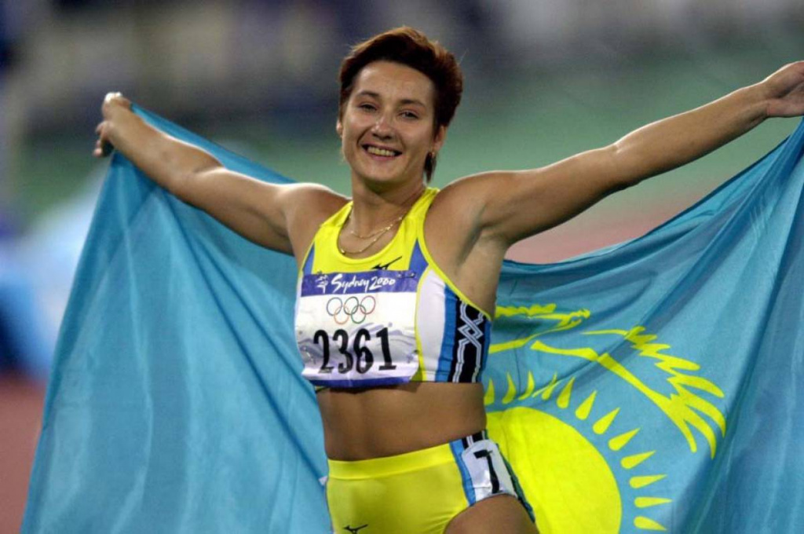
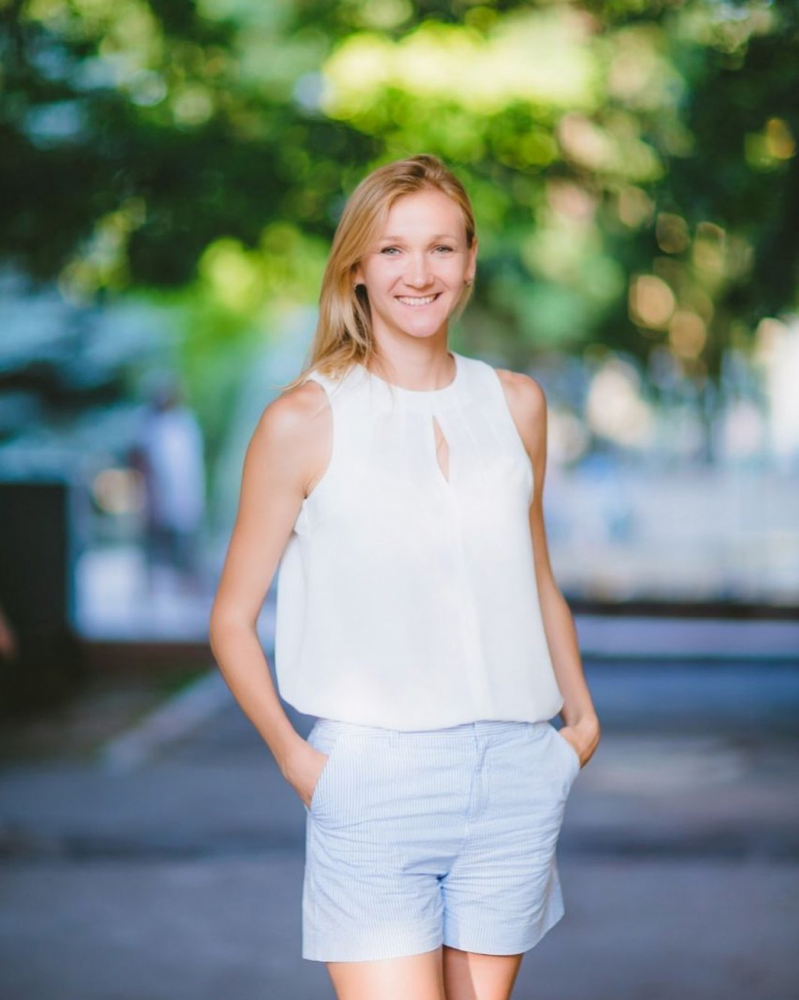
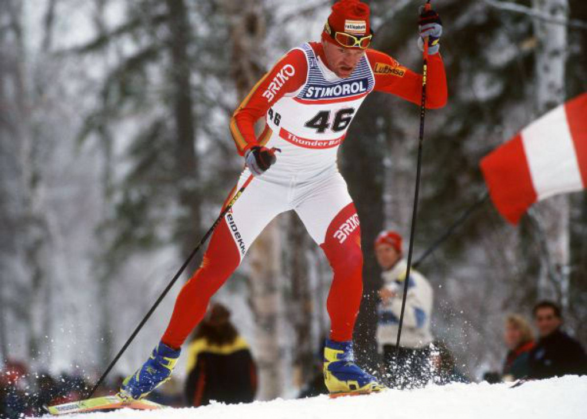
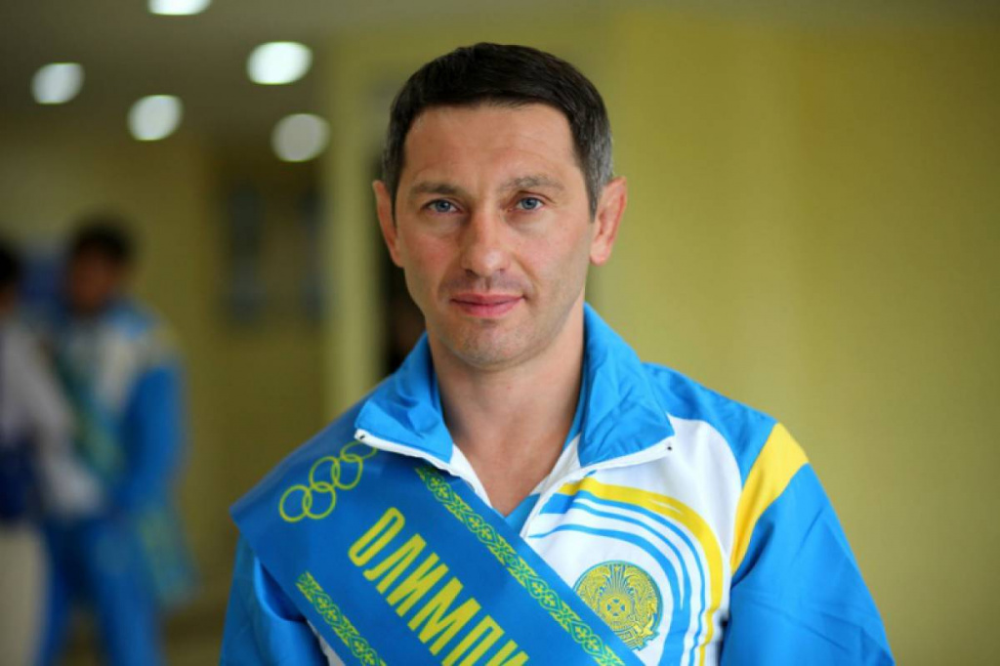
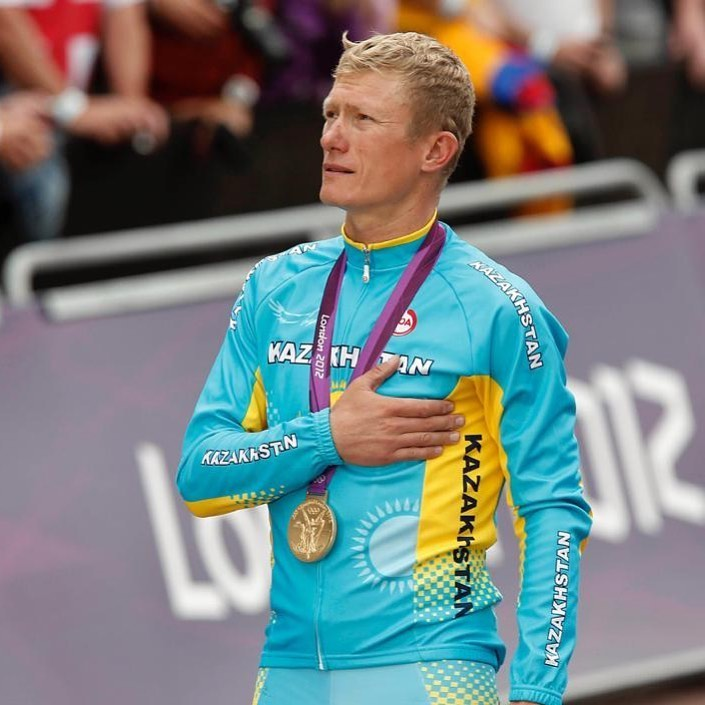
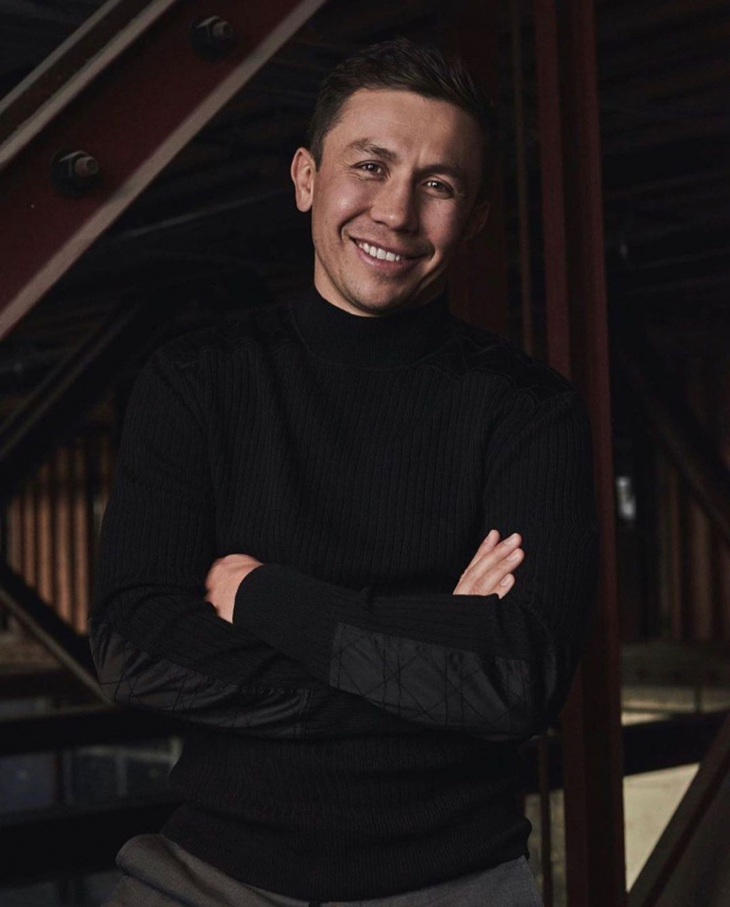

Выдающиеся спортсмены РК
 Ольга Васильевна ШишигинаВ 1996−1998 годах была дисквалифицирована за применение допинга (станозолол). В 2001 году Шишигина завоевывает бронзовую медаль на чемпионате мира в канадском Эдмонтоне, после которого, в связи с травмами, пришлось уйти из большого спорта. Заведовала кафедрой легкой атлетики Казахской государственной Академии туризма и спорта. Инструктор по спорту пограничной службы КНБ Республики Казахстан. Подполковник.
С 22 января 2013 года — депутат Мажилиса Парламента Республики Казахстан пятого созыва, избрана по партийному списку партии «Нур Отан»
 Ольга Сергеевна РыпаковаВ 2001 году окончила Восточно-Казахстанскую областную школу-интернат для одаренных в спорте. Тренируется под руководством отца — С. Д. Алексеева. Чемпионка мира 2010 года в прыжках в длину, трёхкратная чемпионка Азиатских игр в тройном прыжке и однажды в семиборье, чемпионка Универсиады 2007 года в Бангкоке (Таиланд) в тройном прыжке. Заслуженный мастер спорта.
На Олимпиаде 2012 в предварительном раунде была первой с результатом 14,79 м. В финале олимпийских игр в Лондоне победила с результатом 14,98 м.
 Влади́мир Миха́йлович Смирно́вСпортсмен стал победителем зимней Олимпиады в 1994 году. Четыре раза брал «серебро» и «бронзу» зимних Олимпийских игр. Стал четырехкратным чемпионом мира. Входит в число сильнейших лыжников мира 80-90-х годов ХХ века.
 Ю́рий Васи́льевич Мельниче́нкоТитулованный казахстанский борец греко-римского стиля. Стал победителем Олимпийских игр 1996 года, двукратным чемпионом Азии, дважды становился чемпионом мира.
 Александр Семёнович ВинокуровЛегенда казахстанского велоспорта. Выигрывал «золото» и «серебро» Олимпийских игр. В составе велокоманды «Астана» побеждал на гранд-туре «Вуэльта». В составе команды T-Mobile побеждал на престижной гонке Париж — Ницца и занял третье место в генеральном зачете «Тур де Франс».
 Генна́дий Генна́дьевич Голо́вкинГенна́дий Генна́дьевич Голо́вкин (род. 8 апреля 1982, Караганда, Казахская ССР, СССР) — казахстанский боксёр-профессионал, выступающий в средней весовой категории. Серебряный призёр Олимпийских игр (2004), чемпион мира (2003) в категории любителей. Среди профессионалов двукратный чемпион мира по версиям IBF и IBO. Действующий чемпион мира по версиям IBF (2015—2018, 2019 — н.в.) и IBO (2011—2018, 2019 — н.в.), и бывший чемпион мира по версиям WBA (2010—2018), WBC (2016—2018), The Ring (2018—2018) в среднем весе. Победил 10 боксёров за титул чемпиона мира в среднем весе
Лучший боксёр вне зависимости от весовой категории по версии журнала The Ring (27 сентября 2017 — 15 сентября 2018.). Лучший боксёр 2017 года по версии WBA,[5] WBC[6] и популярного издания Boxingnews24.com[7]. Занимает 60 место в рейтинге лучших боксеров всех времен и народов вне зависимости от весовой категории, а также второе место в рейтинге лучших азиатских боксеров в истории спорта по версии BoxRec
Заслуженный мастер спорта Республики Казахстан. Победитель множества международных турниров: 7-кратный чемпион Казахстана, чемпион мира среди молодёжи 2000 года, победитель первой Спартакиады Республики Казахстан 2001 года, победитель Кубка мира среди нефтяных стран 2001 года, чемпион ІІІ Восточно-Азиатских игр (2001 г.).
Головкин известен как мощный и техничный панчер и нокаутёр, выигравший большинство своих поединков досрочно. Он одержал 23 победы нокаутом подряд в течение 9 лет с 22 ноября 2008 по 18 марта 2017 года. Входит в книгу рекордов Гиннеса за самый высокий процент нокаутов в истории среднего веса.[1] Побил рекорд Бернарда Хопкинса по общему числу успешных защит чемпионского титула в среднем весе, защитив его 21 раз по состоянию на 2020 год[10]. Некоторые источники, однако ставят под сомнение это достижение, указывая на тот факт, что титул WBA Regular, которым Головкин владел до повышения на статус «суперчемпиона» в 2014 году, считается второстепенным титулом и не относится к основным чемпионским званиям